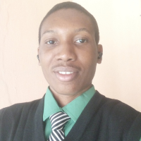

Lawrence Achapu

Summary
I am a hardworking and dedicated individual with strong academic discipline, leadership
experience, and interest in research and medical education. Experienced in peer teaching,
content coordination, and academic community building.
Education
- Bachelor of Sciences, Human Anatomy - Delta State University (2018-2022)
- MBBS (in view) - Delta State University (400level)
Work Experience
- Founder - Medical Book Club, Niger!
October 2024 - Present
- Founded a platform to promote collaborative learning and peer mentorhip among medical students
- Support students in exam preparation, conceptual understanding, and research engagement
- Foster a community of motivated learners and connect members with academic mentors
- Team Lead - Anatomy Book Club
April 2022 - Present
- Lead peer-learning sessions for students
- Develop structured tutorials, study guides, and mentorship programs for junior students
- Coordinate team members and organize interactive academic events
- Research Assistant - Delta State Teaching Hospital
January 2023 - December 2024
- Collaborate on research projects in clinical medicine, anatomy and related biomedical fields
- Contribute to data collection, analysis, and reporting, ensuring scientific rigor
- Actively participated in research discussions, workshops, and publications
- Editor-in-Chief - The Stillwaters, Mental Health Foundation
January 2023 - September 2024
- Advocate for mental health awareness and support within student and community populations
- Plan and implement mental health campaigns, workshops, and peer support initiatives
- Collaborate with stakeholders to promote community well-being and awareness programs
- Assistant Director of Welfare - Delta State University Medical Students' Association
December 2025 - Present
- Responsible for supporting the academic, social, and general well-being of medical students
- Collaborate with the Welfare Directorate to identify and address student welfare concerns, including academic pressure, financial stress, and student support needs
- Assist in planning and executing welfare-focused initiatives, outreach programs, and student support activities
- Director of Academic Affairs - Anatomical Student Society of Nigeria, DELSU CHAPTER
January 2021 - September 2022
- Oversee academic programs, events, and initiatives for anaomy students
- Coordinate with faculty and students to enhance learning opportunities
- Promote peer mentorship and group tutorials, geared towards academic excellence within the student community
- Community Tutor - Casio Community Tutorials, DELSU
March 2020 - September 2022
- Teach and mentor students in anatomy and related subjects
- Develop tutorial materials, practical sessions, and exam-focused strategies
- Support student learning through mentorship and academic guidance.
Skills
- Leadership and Team collaboration ★ ★ ★ ★
- Interpersonal communication ★ ★ ★
- Managerial skill ★ ★ ★ ★
- Teaching ★ ★ ★ ★ ★
- Mentorship ★ ★ ★
Awards and Certifications
Team Leadership - Anatomy Book Club (September,2022)
Best Tutor of the Year - Casio Community Tutorials, DELSU (August, 2021)
Others
© 2025 Lawrence Achapu. All rights reserved.